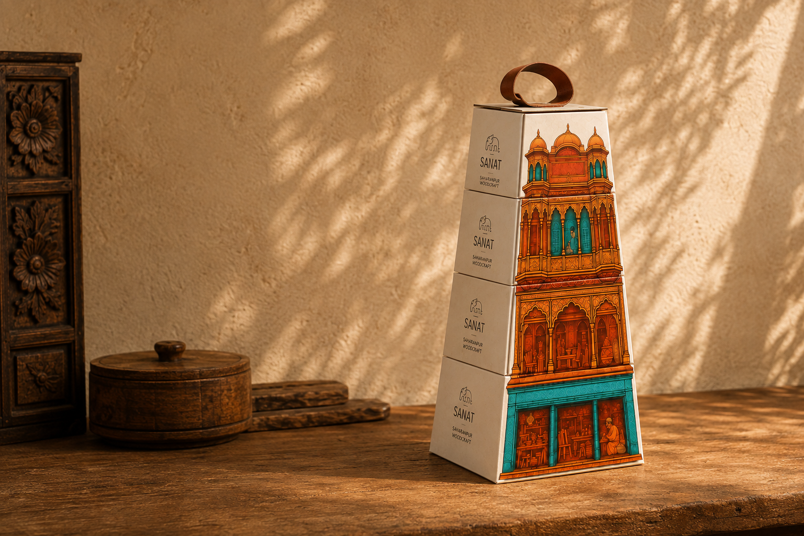
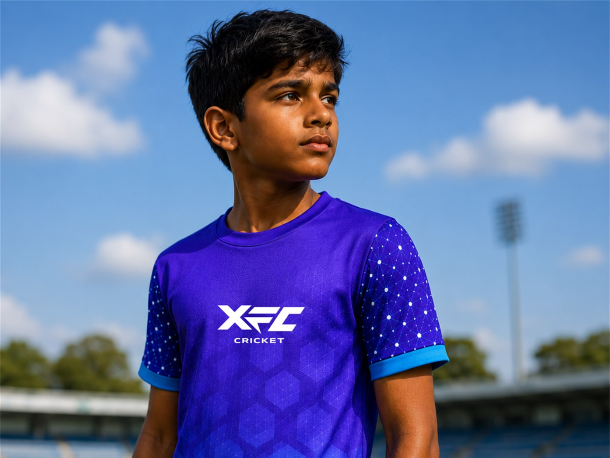

Concept & brand designer
The niches hate to see me coming
I turn concepts into brands, products and experiences. Designing, building and shipping the things they become.
Open to full-time and freelance, remote preferred
Selected work

Lombardi Hotels
One identity across three Italian hotels, and a 102-year-old woman who became the face of it.
673 Italian reservations
Read the case study →
Lombardi Hotels
Brand Identity · Campaign · Character · 2024
SANAT
A 400-year-old Saharanpur wood carving tradition, repackaged as a building you can carry home.
Built under the UP Government's ODOP initiative
Read the case study →
SANAT
Strategy · Identity · Packaging · 2025
BoopShaillyBoop
An art mail club I designed, built and ship myself. One envelope a month, made by hand.
Designed, built and shipped solo
Read the case study →
BoopShaillyBoop
Brand · Product · Digital Build · 2026
XFC Cricket
A winning practice kit built from the shape of a team huddle. Going into production.
Winner, open competition, Dubai
Read the case study →
XFC Cricket
Concept · Visual System · Apparel · 2026

Taking on new work
I want to take brands from the first idea to the thing people actually hold. Full-time roles, freelance, remote either way.
Email me →